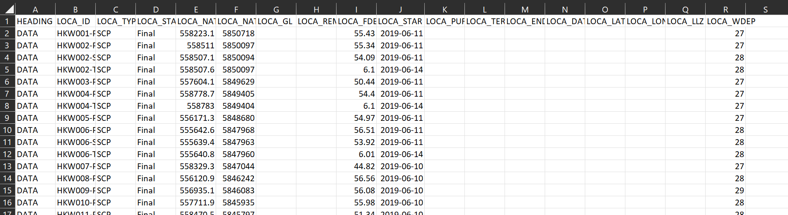

flowchart LR A[Data source] --> B[Read/prepare data] B --> C[Visualize] C --> D[Enable interactivity] D --> E[Put all in an HTML] E --> F((Deploy/share))
This is a short step-by-step guide on how to create interactive output for geotechnical data using Observable JavaScript (OJS) combined with your go-to programming language for working with data (R, Python, or Julia). The main idea is to create content similar to the following examples:
These types of documents can be used a lot in geotechnics, starting from exploring in-situ and laboratory data up to presenting output like design lines. Interactivity overcomes most of the challenges associated with the static way of presenting content.
This is not a thorough guide, and some key concepts only are shown. Much more material is shown in the links in this document.
If you have any comments/remarks on the content of this post, you can select the specific text and add Annotate or Highlight. The comments will appear on the top right of the page.
Let’s say we want to create some interactive output for some geotechnical data we have. To do this, we could think of the following workflow:
flowchart LR A[Data source] --> B[Read/prepare data] B --> C[Visualize] C --> D[Enable interactivity] D --> E[Put all in an HTML] E --> F((Deploy/share))
Depending on the type/size of the data, project, and our idea on how the final output should look, each of these steps may involve small or enormous amount of work. Let’s consider the Read/prepare data step. If the data we are reading are already formatted the way we want, no preparation is needed. Generally speaking, though, you would want/need to work a bit with the data.
What tools can we use to complete each of these steps? The steps involving retrieving the data from a Data source and Read/prepare data would need writing some code. There are many options here. We could use R to complete these tasks or we could rather go for the difficult way, using Python or Julia.
flowchart LR A[Data source] --> B[Read/prepare data] B --> C[Visualize] C --> D[Enable interactivity] D --> E[Put all in an HTML] E --> F((Deploy/share)) style A fill: #ffe3e3 style B fill: #ffe3e3
flowchart LR A[Data source] ---> G & H & I G[R] ---> B[Read/prepare data] H[Python] ---> B[Read/prepare data] I[Julia] ---> B[Read/prepare data] style A fill: #ffe3e3 style B fill: #ffe3e3 style G fill: #ffe3e3 style H fill: #ffe3e3 style I fill: #ffe3e3
There are many options to Visualize data and to Enable interactivity. Here we are going to use OJS. OJS is a big platform but what we are mostly interested here is the Observable Plot package.
Observable Plotis a free, open-source, JavaScript library for visualizing tabular data, focused on accelerating exploratory data analysis. It has a concise, memorable, yet expressive interface, featuring scales and layered marks in the grammar of graphics …
flowchart LR A[Data source] --> B[Read/prepare data] B --> C[Visualize] C --> D[Enable interactivity] D --> E[Put all in an HTML] E --> F((Deploy/share)) style C fill: #ffe3e3 style D fill: #ffe3e3
flowchart LR J[OJS] ---> C[Visualize] J[OJS] ---> D[Enable interactivity] style C fill: #ffe3e3 style D fill: #ffe3e3 style J fill: #ffe3e3
Lastly, to Put all in an HTML and to Deploy/share our work, we use Quarto.
An open-source scientific and technical publishing system.
flowchart LR A[Data source] --> B[Read/prepare data] B --> C[Visualize] C --> D[Enable interactivity] D --> E[Put all in an HTML] E --> F((Deploy/share)) style E fill: #ffe3e3 style F fill: #ffe3e3
flowchart LR K[Quarto] ---> E[Put all in an HTML] K[Quarto] ---> F((Deploy/share)) style E fill: #ffe3e3 style F fill: #ffe3e3 style K fill: #ffe3e3
Quarto provides what we need: ease to create and publish HTML content. Most importantly though, it enables combining R, Python, Julia and OJS within the same document. This means that we can complete all the workflow within the Quarto ecosystem.
flowchart TB K[Quarto] --> A[Data source] K[Quarto] --> B[Read/prepare data] K[Quarto] --> C[Visualize] K[Quarto] --> D[Enable interactivity] K[Quarto] --> E[Put all in an HTML] K[Quarto] --> F((Deploy/share)) style K fill: #ffe3e3
Let’s create a minimal example using the workflow/tools we presented above. The source of the data is an AGS file. We are using Python to work with the data and VS Code as the IDE.
This is one of many possible paths. There are several options.
Setting up the working environment involves:
PowerShell, Windows Terminal, VS Code, Git, Pyenv, and Poetry. There is an NGI Code Academy guide that covers all this.Quarto.Quarto extension for VS Code.Start the project by doing one of the following:
poetry, or, alternativelyGitHub / Azure and clone it locally..qmd documentQuarto files end with the .qmd extension..qmd file is basically a notebook: it combines markdown text with code chunks..qmd file we have the YAML which sets the scene for what we want to do with this file (e.g., what kind of output we want to have). An example YAML can be:---
title: "OJS for geodata"
subtitle: "Interactive output for geotechnical data with R/Python/Julia + OJS"
author: EMy
format: html
---YAML we have the other content:
markdown text: to explain stuff, andcode chunks: to do stuff.```{python}
# this is a python code chunk
# here we write python code
``````{ojs}
// this is a OJS code chunk
// here we write OJS code
```We read an AGS file and extract the CPT locations (group LOCA). The data are then saved locally in a CSV file. All this work is done with python, so the actual code is placed within python code chunks (which start with ```{python}).
1import polars as pl
from python_ags4 import AGS4
2tables, headings = AGS4.AGS4_to_dataframe('data/HKW_20190902_FNLM_CPT_AGS4.0_V02_F.ags')
LOCA = AGS4.convert_to_numeric(tables['LOCA'])
3LOCA = pl.from_pandas(LOCA)
LOCA.write_csv('csv/LOCA.csv')AGS.
polars DF and write CSV file.

We now leave Python and jump to OJS and more specifically to Observable Plot. The OJS code is written inside the respective code chunks, which start with ```{ojs}. Initially let’s load the brand-new CSV file into OJS.
LOCA = FileAttachment('csv/LOCA.csv').csv({typed: true})LOCAInputs.table(LOCA)If we look at the LOCA tab above, we see that OJS presents the data in similar way to JSON data format. To view this data in a more traditional table-like format we use Inputs.table(LOCA) code (see the LOCA table tab).
We can plot a location map of the CPTs, using Observable Plot:
Plot.plot({
marks: [
Plot.dot(
LOCA,
{
x: "LOCA_NATE",
y: "LOCA_NATN",
r: 4,
stroke: "blue"
}
)
]
})There is nothing interactive about the previous plot. We might want, for example, to have a slider that allows to change the size of the dots. How to add such interactivity?
For this, we use Inputs.
These lightweight interface components — buttons, sliders, dropdowns, tables, and the like — help you explore data and build interactive displays.
There are many type of Inputs and each of them allows us to interact with the plots in a specific way. The most basic type is a numeric range:
viewof x = Inputs.range()
xWe can further customise the previous Input by specifying:
dotsize[0, 40]51, andSize of dot:.viewof dotsize= Inputs.range(
[0, 40],
{
value: 5,
step: 1,
label: "Size of dot:"
}
)
dotsizeWe need to connect this slider with the previous plot. To do this, we use the name of the slider dotsize and refer it in the plot code. In our case, we link the dotsize slider with the radius r in the plot code. Note that the following plot is responsive to changes in the slider.
Plot.plot({
marks: [
Plot.dot(
LOCA,
{
x: "LOCA_NATE",
y: "LOCA_NATN",
r: dotsize, // it was 4 before,
stroke: "blue"
}
)
]
})Other interactive elements can be added to the plot. Let’s say we want:
Input to change the color of the dots in the locations map.Input allowing us to select one or some CPT locations and highlighting the selected locations in the location map.Input allowing to show the location ID for the selected CPTs.These Inputs would look like this:
viewof dotcolor = Inputs.color({label: "Color of dot:"})
// select locations
viewof filt_loc = Inputs.select(
[null].concat(LOCA.map(d => d.LOCA_ID)),
{
multiple: 8,
label: "Select:",
sort: true,
unique: true
}
)
// filter selected locations
LOCA_FILT = LOCA.filter(function(func_filt) {return filt_loc.includes(func_filt.LOCA_ID);})
// location name
viewof name = Inputs.toggle({label: "Name?:"})Linking these Inputs to the plot:
Plot.plot({
marks: [
Plot.dot(
LOCA,
{
x: "LOCA_NATE",
y: "LOCA_NATN",
r: dotsize,
stroke: dotcolor
}
),
Plot.dot(
LOCA_FILT,
{
x: "LOCA_NATE",
y: "LOCA_NATN",
symbol: "times",
r: 10,
stroke: "LOCA_ID",
strokeWidth: 5
}
),
name ? Plot.text(
LOCA_FILT,
{
x: "LOCA_NATE",
y: "LOCA_NATN",
text: 'LOCA_ID',
fill: 'black',
stroke: 'white'
}
) : null
]
})To render the HTML file including all our interactive (and also static) content, we run quarto render <my_file_name>.qmd in Terminal. There are many options to publish and share this HTML, e.g. Gitub Pages. We can’t go into details here, but the process is rather straightforward.
This is all.